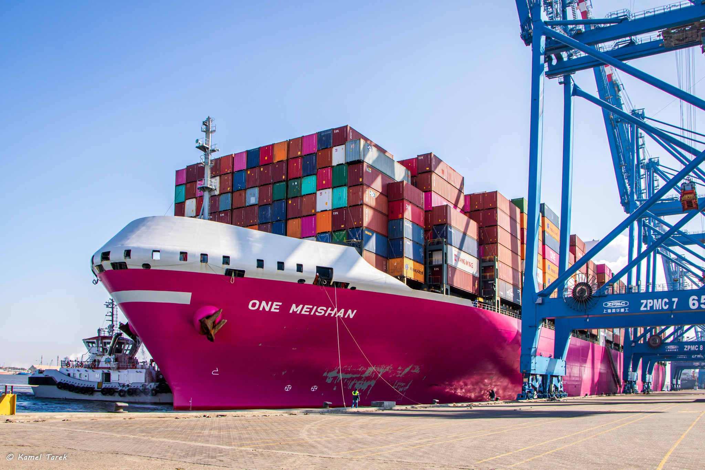
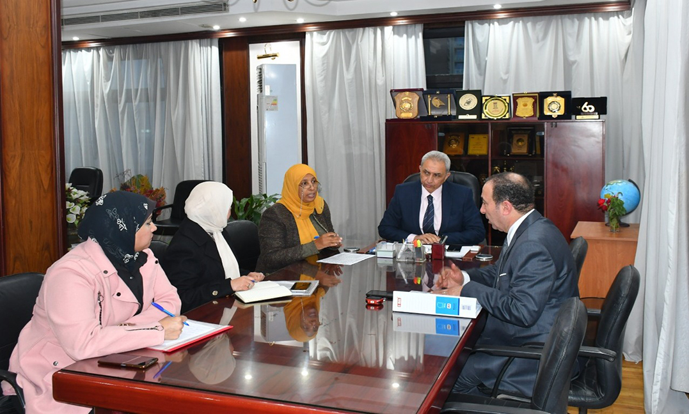
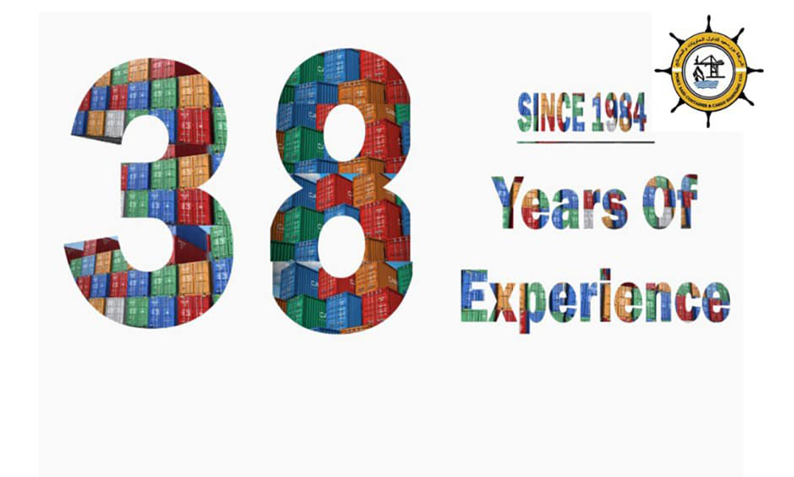

-
 سفينة الحاويات العملاقة ONE MEISHAN تصل إلى محطة حاويات دمياط
ستقبلت شركة دمياط لتداول الحاويات والبضائع سفينة الحاويات العملاقة ONE MEISHAN التابعة للخط الملاحي اليابانيOcean Network Express (ONE) وهو من أكبر مشغلي شحن الحاويات في العالم
-
 لقاء السيد المهندس خالد امين رئيس مجلس إدارة الهيئة المصرية العامة للمساحة مع السيد الدكتور عمرو أحمد مصطفى العضو المنتدب للشركة القابضة للنقل البحري والبري التابعة لوزارة النقل
حدث اللقاء بحضور كلا من السيدة المهندسة هويدا النوبي نائب رئيس مجلس الإدارة لشئون المساحة بالمناطق والاستاذة شيماء محمد بقطاع الاستثمار والأستاذة نهاد الشربيني بقطاع الشئون القانونية بالشركة
-
 نحتفل هذا العام بمرور 38 عاما على انشاء شركة بورسعيد لتداول الحاويات والبضائع
نحتفل هذا العام بمرور 38 عاما على انشاء شركة بورسعيد لتداول الحاويات والبضائع حيث أنشأت فى 31/7/1984 فى هذه المناسبة نود ان ننتهز هذه الفرصه للاعلان عن أعظم امتناننا وشكرنا لجميع شركاتنا وعملائنا